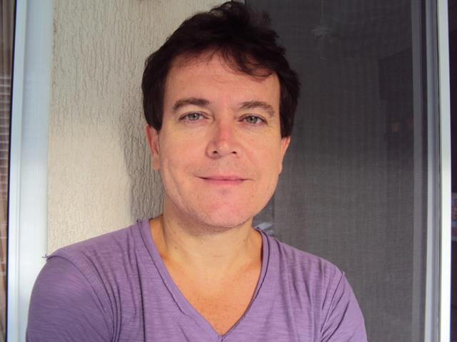
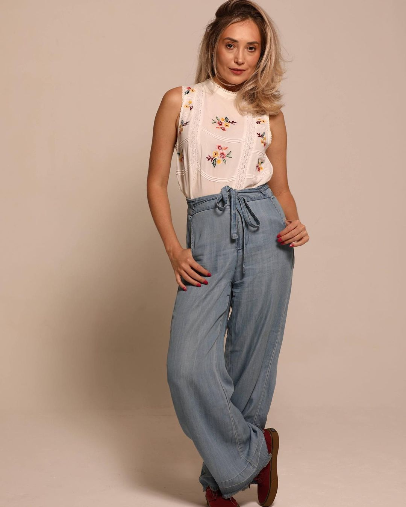

☰ Menu
Dubladores (as) Brasileiros (as)
Isabelle Cunha
Isabelle Cunha é uma dubladora do Rio De Janeiro, ela é uma dubladora incrível, talentosa e muito famosa, provavelmente você já ouviu falar dela ou já ouviu a voz dela. Isabelle dubla diversas séries e filmes, como :
- - Eleven - (Stranger Things);
- - Tikki - (Miraculous: As Aventuras de Ladybug);
- - Enola - (Enola Homes);
- - Madison Russell - (Godzilla II);
- - Chloe - (Champions Legion);
- - Fuli - (A Guarda do Leão);
- - Violet Baudelaire - (Desventuras em Série);
- - Janet Hodgson - (Invocação do Mal 2);
- - Rainha da Corte Seelie - (Shadowhunters).
Siga Isabelle Cunha

Guilherme Briggs
Guilherme Neves Briggs é um ator, dublador, diretor de dublagem, locutor, tradutor, desenhista, youtuber e blogueiro brasileiro do Rio De Janeiro. Guilherme Briggs dublou diversas séries e filmes, como :
- - Ross Geller - (Friends);
- - Groxo - (X-Men: Evolution);
- - Buzz Lightyear (Toy Story);
- - Superman - (Liga da Justiça);
- - Cosmo (Os Padrinhos Mágicos);
- - Hawk Moth/Shadow Moth - (Miraculous: As Aventuras de Ladybug);
- - Shaman (O Clube das Winx: World of Winx);
- - Lord Viren (O Príncipe Dragão);
- - Teddy (A Era do Gelo: O Big Bang).
Siga Guilherme Briggs
Ana Helena De Freitas
Ana Helena De Freitas é uma dubladora, cantora e atriz do Rio De Janeiro, ela é uma ótima dubladora e muito famosa. Ana Helena dubla diversas séries e filmes, como :
- - Oeste - (Perdidos em Oz);
- - Ani - (Next Gen);
- - Sienna - (A Casa da Raven);
- - Erica - (Stranger Things);
- - Mirabelle Harris - (The Kicks);
- - Hadley St. Germain - (Pretty Little Liars);
- - Roberta Barrios - (Noobees);
- - Isabella - (Transformers: O Último Cavaleiro);
- - Nancy - (Annabelle 2: A criação do Mal).
Siga Ana Helena
Alexandre Drummond
Alexandre Drummond é um dublador e diretor de dublagem do Rio De Janeiro. Alexandre é neto do dublador Orlando Drummond. Alexandre é muito conhecido por suas dublagem como :
- - Patch - (101 Dálmatas II);
- - Tom Riddle (16 anos) - (Harry Potter);
- - Jovem Scooby-Doo - (Scooby! O Filme);
- - Timmy Turner - (Os Padrinhos Mágicos);
- - Mogli - (Mogli: O Menino Lobo 2);
- - Barry Allen/Flash - (The Flash);
- - Shawn e Devin - (Drama Total);
- - Alec Lightwood - (Shadowhunters);
- - Sweet Pea - Riverdale.
Siga Alexandre Drummond
Úrsula Bezerra
Úrsula Luís Bezerra Da Silva é uma dubladora e diretora de dublagem de São Paulo. Úrsula Bezerra é muito conhecida por dubladar diversas séries, animes e filmes, como :
- - Goku (criança) - (Dragon Ball);
- - Naruto Uzumaki - (Naruto);
- - Kimba - (O leão branco);
- - Totodile do Ash - (Pokémon);
- - Twyla (A Filha do Bicho-Papão) - (Monster High);
- - Bocão - (Kick Buttowski);
- - Jirōmaru - (O Rapaz e o Monstro);
- - Doki - (As Aventuras de Doki);
- - Gnar - (League of Legends).
Siga Úrsula Bezerra
Charles Emmanuel
Charles Emmanuel De Barros Marcondes é um ator, dublador, youtuber e streamer brasileiro do Paraná. Charles Emmanuel é muito conhecido por dublar desenhos animados, filmes, novelas mexicanas e séries, como :
- - Rony Weasley - (Harry Potter);
- - Ben Tennyson - (Ben 10);
- - Rigby - (Apenas um Show);
- - Mutano - (Jovens Titãs);
- - Nate River (Near) - (Death Note);
- - Gowther - (Nanatsu No Taizai - Sete pecados capitais);
- - Eustáquio - (As Crônicas de Nárnia);
- - Bolin - (Avatar: A Lenda de Korra);
- - Tenma de Pégaso - (Cavaleiros do Zodíaco).
Siga Charles Emmanuel
Luisa Palomanes
Luisa Palomanes é uma atriz e dubladora do Rio De Janeiro. Luisa é muito conhecida por seus trabalhos de dublagem, como :
- - Tris - (Divergente);
- - Mera - (Liga da Justiça e Aquaman);
- - Hazel Grace Lancaster - (A Culpa é das Estrelas);
- - Hermione Granger - (Harry Potter);
- - Marília - (Esquadrão Bizarro - O Filme);
- - Paulina "Lina" Zander - (Ouija: Origin of Evil);
- - Iris West - (The Flash);
- - Darcy Lewis - (Thor e Thor: O Mundo Sombrio);
- - Princesa Merida - (Valente e WiFi Ralph).
Siga Luisa Palomanes
Fabrício Vila Verde
Fabrício Vila Verde é um ator, diretor de dublagem e dublador de Nova Iguaçu. Fabrício dubla diversos personagens de filmes e séries de televisão, como :
- - Adrien Agreste (Cat Noir) e Félix Graham de Vanily - (Miraculous: As Aventuras de Ladybug);
- - Huguinho - (DuckTales: Os Caçadores de Aventuras);
- - Phineas Flynn - (Phineas e Ferb);
- - Meliodas - (Nanatsu no Taizai);
- - Eco-Eco - (Ben 10);
- - Ralph Dibny/Homem Elastico - (The Flash);
- - Ken Utônio - (Meninas Superpoderosas: Geração Z);
- - Asa Butterfield - (O Menino do Pijama Listrado);
- - Benedict Clarke - (Harry Potter e as Relíquias da Morte: Parte 2).
Siga Fabrício Vila Verde
Jéssica Vieira
Jéssica Vieira de Araújo é uma atriz, dubladora e youtuber do Rio De Janeiro. Jéssica Vieira é muito famosa por suas dublagens, como :
- - Aimee Gibbs - (Sex Education);
- - Aisha Robinson - (Cobra Kai);
- - Alex - (The A List);
- - Amora Linda - (Moranguinho: Aventuras em Tutti Frutti);
- - Ashley - (The Thundermans);
- - Charlotte Page - (Henry Danger);
- - Ethel Mug - (Riverdale);
- - Marinette Dupain-Cheng (Ladybug) - (Miraculous: As Aventuras de Ladybug);
- - Rayla - (O Príncipe Dragão).
Siga Jéssica Vieira
Alexandre Moreno

Alexandre Alves Nascimento é um ator e dublador do Rio De Janeiro. Ganhou o Prêmio Yamato de Melhor ator 2002 no Segundo Festival de Cinema de Varginha com o filme "Uma Onda no Ar" de Helvécio Ratton, e o Prêmio CESGRANRIO DE TEATRO de melhor ator em musical na peça A Cuíca do Laurindo de Rodrigo Alzuguir com direção de Sidney Cruz. Alexandre dubla diversas séries e filmes, como :
- - Adam Sandler - (Todos os filmes de Adam);
- - Pinky - (Pinky e o Cérebro);
- - Ciclope - (X-Men Evolution);
- - Kaká - (Johnny Bravo);
- - Gato de Botas - (Shrek);
- - Alex - (Madagascar);
- - Buck - (A Era do Gelo);
- - Drácula - (Hotel Transilvânia);
- - Pernalonga - (Looney Tunes).
Siga Alexandre Moreno
Mariana Torres
Mariana Torres é uma atriz, dubladora e diretora de dublagem do Rio De Janeiro. Mariana é conhecida por dar voz à atriz Raven-Symoné no seriado As Visões da Raven e em alguns de seus filmes. Com esse trabalho ganhou, em 2009, o prêmio de Melhor Dubladora de Protagonista, no Oscar da Dublagem. Mariana Torres dubla diversas séries e filmes, como :
- - Christine - (Champions Legion);
- - Amy - (A Escolha Perfeita e A Escolha Perfeita 2);
- - Carina - (Thor: O Mundo Sombrio e Guardiões da Galáxia);
- - Katniss Everdeen - (Jogos Vorazes);
- - Erica Reyes - (Teen Wolf);
- - Raven Baxter - (As Visões da Raven);
- - Cruella - (Cruella, filme de 2021);
- - Wanda Maximoff - (Vingadores: Era de Ultron, Capitão América: Guerra Civil, Vingadores: Guerra Infinita, Vingadores: Ultimato e WandaVision);
- - Dora - (Dora e seus Amigos da Cidade).
Siga Mariana Torres
Wesley Santana
Wesley Santana é ator e dublador carioca. Wesley é conhecido por dublar diversas séries e filmes, como :
- - Joe Cassidy - (Calibre);
- - Brad Ashten - (Outer Banks);
- - Loki - (Loki);
- - Hassard - (Kengan Ashura);
- - Rafael del Villar - (Amanhã é Para sempre);
- - Jorge Poza - (Cachito do Céu);
- - Manuel Balbi - (O Último Dragão);
- - Óscar Rodo - (Noobees);
- - Suguru Getou - (Jujutsu Kaisen).
Siga Wesley Santana
Carla Martelli

Carla Martelli é uma atriz, dubladora e diretora de dublagem de São Paulo. Carla é atuante principalmente nas regiões de Campinas e São Paulo. Um de seus papeis de maior destaque é a personagem Tóquio, do seriado espanhol La Casa de Papel. Carla é conhecida por dublar várias séries e filmes, como :
- - Bee - (A Babá);
- - Amaia - (O Guardião Invisível);
- - Tóquio - (La Casa de Papel);
- - Jessica - (Rick & Morty);
- - Sanakan - (Blame);
- - Kristina Kuroda - (Beyblade Burst: Evolution);
- - Elizabeth - (Quando chama o coração);
- - Ruth Wilder - (Glow);
- - Sypha Belnades - (Castlevania).
Siga Carla Martelli
Alfredo Rollo
Alfredo dos Santos Rollo é um dublador, psicólogo e psicodramatista de São Paulo. Alfredo é muito conhecido por dublar diversas séries e filmes, como :
- - Zachary Levi - (Alvin e os Esquilos 2);
- - Jonny Rico - (Tropas Estelares: a série);
- - Aoshi - (episódio 89 de Samurai X);
- - Brock - (Pokémon);
- - Lucifer Morningstar - (Lucifer);
- - Chris Ostreicher - (American Pie);
- - Kaiser - (Naruto);
- - Blacke - (A Volta do Incrível Hulk);
- - Dr. Wilson - (Dr. House).
Siga Alfredo Rollo
Se gostaram do site não esqueçam de me seguir no Instagram. Obrigado a todos
Criador do site: Adrian Gabriel Benetti - Todos os direitos reservados